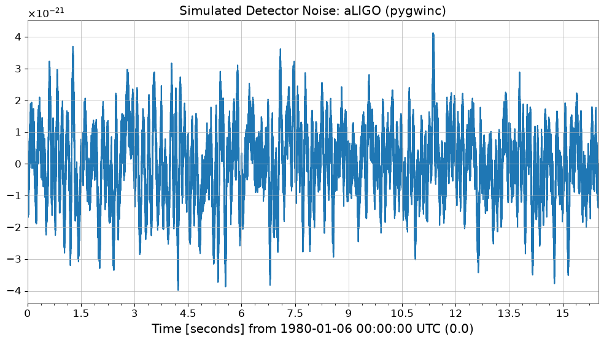
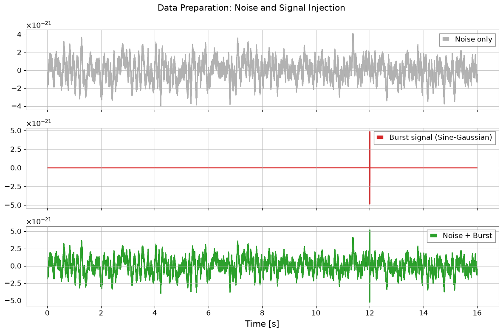
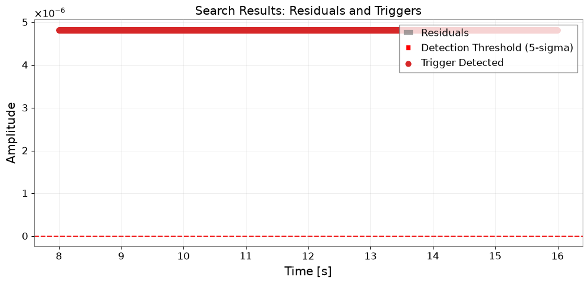
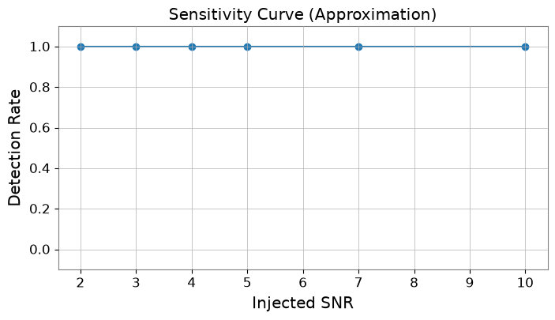

ARIMA を用いたバーストイベント検出#
バースト重力波探索のアイデアスケッチ#
はじめに#
検出器データは近似的に定常な背景ノイズに支配されており、バースト重力波（例：コアコラプス超新星由来）はそのノイズ中に埋め込まれた短時間の非定常過渡現象として現れます。
本ノートブックでは、自己回帰モデル（ARIMA） を用いて定常背景を学習し、バースト的な残差を際立たせるアイデアを示します。これは波形テンプレートに依存しない、アンモデルド探索戦略の基本的な例です。
参考文献#
Autoregressive Search of Gravitational Waves: Denoising (ARIMA_DeNoise.pdf)
BEACON: Autoregressive Search for Unmodeled transients (BEACON.pdf)
Sparkler: Autoregressive Search of Unmodeled GW (Sparkler_1min.pdf)
import warnings
warnings.filterwarnings("ignore", category=UserWarning)
warnings.filterwarnings("ignore", category=DeprecationWarning)
import warnings
with warnings.catch_warnings():
warnings.simplefilter('ignore')
import matplotlib.pyplot as plt
import numpy as np
import sklearn.utils.validation
# Monkeypatch for pmdarima compatibility with scikit-learn >= 1.6
_orig_check_array = sklearn.utils.validation.check_array
def _patched_check_array(*args, **kwargs):
kwargs.pop("force_all_finite", None)
return _orig_check_array(*args, **kwargs)
sklearn.utils.validation.check_array = _patched_check_array
warnings.filterwarnings(
"ignore", message=r".*force_all_finite.*", category=FutureWarning
)
warnings.filterwarnings("ignore", category=FutureWarning, module=r"sklearn\..*")
warnings.filterwarnings("ignore", category=FutureWarning, module=r"pmdarima\..*")
from gwexpy.noise.wave import colored, from_asd
from gwexpy.timeseries import TimeSeries
1. 検出器ノイズの生成#
まず検出器の背景ノイズをシミュレートします。aLIGO 設計感度モデルが利用可能な場合はそれを使用し、利用できない場合は汎用カラードノイズにフォールバックします。
# === Parameters ===
sample_rate = 4096 # Hz
duration = 16 # seconds
seed = 42
# === Noise generation ===
try:
from gwexpy.noise.gwinc_ import from_pygwinc
# Get aLIGO sensitivity curve
asd = from_pygwinc("aLIGO", fmin=10.0, fmax=sample_rate/2, df=1.0/duration)
# Generate time-series noise from ASD
noise = from_asd(asd, duration=duration, sample_rate=sample_rate, seed=seed,
name="aLIGO_noise")
noise_model_name = "aLIGO (pygwinc)"
except ImportError:
# Fallback if pygwinc is not installed: power-law colored noise (1/f)
noise = colored(duration=duration, sample_rate=sample_rate,
exponent=0.5, amplitude=1e-21, seed=seed,
name="colored_noise")
noise_model_name = "Colored noise (f^{-0.5})"
print(f"Noise model: {noise_model_name}")
print(f"Sample count: {len(noise)}, dt={noise.dt}s, duration={duration}s")
noise.plot()
plt.title(f"Simulated Detector Noise: {noise_model_name}")
plt.show()
Noise model: aLIGO (pygwinc)
Sample count: 65536, dt=0.000244140625 ss, duration=16s

2. バースト信号の注入#
サイン・ガウスバーストをデータの後半に注入し、それをテストセグメントとして使用します。
def make_sine_gaussian(duration, sample_rate, t_center, freq, tau, amplitude, t0=0.0):
"""Generate a Sine-Gaussian pulse"""
t = np.arange(0, duration, 1.0/sample_rate)
envelope = amplitude * np.exp(-((t - t_center)**2) / (2 * tau**2))
signal = envelope * np.sin(2 * np.pi * freq * (t - t_center))
return TimeSeries(signal, sample_rate=sample_rate, t0=t0,
name=f"SG_burst_f{freq}_tau{tau}")
# === Burst Signal Parameters ===
burst_time = 12.0 # Injection time (somewhere in the last 8 seconds)
burst_freq = 250.0 # Hz
burst_tau = 0.002 # seconds
# Adjust amplitude so that SNR is approximately 5
std_noise = float(noise.value.std())
burst_amp = 5.0 * std_noise
burst = make_sine_gaussian(duration, sample_rate, burst_time,
burst_freq, burst_tau, burst_amp)
# === Injection ===
data_with_signal = TimeSeries(
noise.value + burst.value,
sample_rate=sample_rate, t0=noise.t0,
name="data_with_burst"
)
# === Visualization ===
fig, axes = plt.subplots(3, 1, figsize=(12, 8), sharex=True)
axes[0].plot(noise, label="Noise only", color="gray", alpha=0.6)
axes[0].legend(loc="upper right")
axes[1].plot(burst, label="Burst signal (Sine-Gaussian)", color="tab:red")
axes[1].legend(loc="upper right")
axes[2].plot(data_with_signal, label="Noise + Burst", color="tab:green")
axes[2].legend(loc="upper right")
plt.suptitle("Data Preparation: Noise and Signal Injection")
plt.xlabel("Time [s]")
plt.tight_layout()
plt.show()

3. ARIMA による背景学習#
バーストが存在しない最初の 8 秒間のデータに ARIMA モデルをフィットし、定常背景の統計的特性をモデルが学習できるようにします。例を軽量に保つため、データは適度にダウンサンプリングされます。
# === Training Data Preparation ===
# Use the first 8 seconds for the training segment
train_end_idx = int(8.0 * sample_rate)
# Downsample (4096 Hz -> 512 Hz)
downsample_factor = 8
train_data = data_with_signal[:train_end_idx:downsample_factor]
print(f"Training data: {len(train_data)} samples, Fs={train_data.sample_rate} Hz")
# fit_arima: Automatically select optimal degree with Auto-ARIMA (may take some time)
# Limited search range here for speed. Falls back to fixed order if pmdarima is not available.
try:
result = train_data.fit_arima(auto=True, auto_kwargs={"max_p": 3, "max_q": 3, "seasonal": False})
print("\nARIMA Fit Summary (Auto-ARIMA):")
except ImportError:
print("\npmdarima not found. Falling back to fixed order (3, 0, 1).")
result = train_data.fit_arima(order=(3, 0, 1), trend="c")
print("\nARIMA Fit Summary (Fixed Order):")
print(result.summary())
Training data: 4096 samples, Fs=512.0 Hz Hz
ARIMA Fit Summary (Auto-ARIMA):
SARIMAX Results
==============================================================================
Dep. Variable: y No. Observations: 4096
Model: SARIMAX Log Likelihood 43573.081
Date: Tue, 01 Sep 2026 AIC -87142.162
Time: 10:43:40 BIC -87129.526
Sample: 0 HQIC -87137.688
- 4096
Covariance Type: opg
==============================================================================
coef std err z P>|z| [0.025 0.975]
------------------------------------------------------------------------------
intercept -4.825e-06 2.55e-14 -1.89e+08 0.000 -4.82e-06 -4.82e-06
sigma2 1.097e-11 3.01e-11 0.365 0.715 -4.8e-11 6.99e-11
===================================================================================
Ljung-Box (L1) (Q): 3397.18 Jarque-Bera (JB): 463.14
Prob(Q): 0.00 Prob(JB): 0.00
Heteroskedasticity (H): 1.00 Skew: 0.64
Prob(H) (two-sided): 1.00 Kurtosis: 1.96
===================================================================================
Warnings:
[1] Covariance matrix calculated using the outer product of gradients (complex-step).
[2] Covariance matrix is singular or near-singular, with condition number 1.89e+18. Standard errors may be unstable.
/home/runner/micromamba/envs/gwexpy/lib/python3.11/site-packages/statsmodels/stats/stattools.py:131: RuntimeWarning: Precision loss occurred in moment calculation due to catastrophic cancellation. This occurs when the data are nearly identical. Results may be unreliable.
skew = stats.skew(resids, axis=axis)
/home/runner/micromamba/envs/gwexpy/lib/python3.11/site-packages/statsmodels/stats/stattools.py:132: RuntimeWarning: Precision loss occurred in moment calculation due to catastrophic cancellation. This occurs when the data are nearly identical. Results may be unreliable.
kurtosis = 3 + stats.kurtosis(resids, axis=axis)
4. 残差の計算と異常検出#
フィットしたモデルを残りのデータに適用し、残差を調べます。定常ノイズでは残差が小さく収まりますが、モデル化されていないバーストが存在すると局所的な過剰が生じます。
# === Apply to test data ===
test_data = data_with_signal[train_end_idx::downsample_factor]
# Apply the fitted model order to compute residuals
order = result.res.model_orders
test_result = test_data.fit_arima(order=(order['ar'], 0, order['ma']), trend="c")
test_resid = test_result.residuals()
# === Threshold detection (5-sigma) ===
# Set threshold from standard deviation of training residuals
train_resid = result.residuals()
sigma = float(train_resid.value.std())
threshold = 5.0 * sigma
# Trigger detection
trigger_mask = np.abs(test_resid.value) > threshold
# === Visualization ===
fig, ax = plt.subplots(figsize=(12, 5))
ax.plot(test_resid, label="Residuals", color="gray", alpha=0.7)
ax.axhline(threshold, color="red", ls="--", label="Detection Threshold (5-sigma)")
ax.axhline(-threshold, color="red", ls="--")
if np.any(trigger_mask):
t_test = test_resid.times.value
ax.scatter(t_test[trigger_mask], test_resid.value[trigger_mask],
color="tab:red", s=40, zorder=5, label="Trigger Detected")
ax.set_xlabel("Time [s]")
ax.set_ylabel("Amplitude")
ax.set_title("Search Results: Residuals and Triggers")
ax.legend(loc="upper right")
ax.grid(True, alpha=0.3)
plt.show()

5. SNR に対する性能評価#
最後に、さまざまな信号対雑音比でバースト注入を繰り返し、バーストが弱くなるにつれて残差ベースの検出がどのように応答するかを推定します。
# Simple Monte Carlo evaluation
snr_values = [2, 3, 4, 5, 7, 10]
n_trials = 5
detection_rates = []
# Reuse the previously fitted model order
order_tuple = (order['ar'], 0, order['ma'])
print("Evaluating SNR sensitivity...")
for snr in snr_values:
hits = 0
for i in range(n_trials):
# New noise realization
n_val = colored(duration=4, sample_rate=sample_rate, exponent=0.5, seed=snr*100+i).value
s_val = make_sine_gaussian(4, sample_rate, 2.0, burst_freq, burst_tau, snr * n_val.std()).value
trial_ts = TimeSeries(n_val + s_val, sample_rate=sample_rate)[::downsample_factor]
# Fit and check
try:
res = trial_ts.fit_arima(order=order_tuple)
if np.any(np.abs(res.residuals().value) > 5.0 * sigma):
hits += 1
except:
continue
detection_rates.append(hits / n_trials)
plt.figure(figsize=(8, 4))
plt.plot(snr_values, detection_rates, 'o-')
plt.xlabel("Injected SNR")
plt.ylabel("Detection Rate")
plt.title("Sensitivity Curve (Approximation)")
plt.ylim(-0.1, 1.1)
plt.grid(True)
plt.show()
Evaluating SNR sensitivity...

まとめ#
ARIMA を用いたバースト探索の核心的なアイデア#
背景抑制: 定常ノイズをモデル化・差し引きすることで、弱い過渡現象の視認性を向上させる。
残差解析: 期待される残差分布からの逸脱を監視し、モデル化されていないイベントを同定する。
BEACON などの本番パイプラインはこのアイデアを複数チャンネルおよびコヒーレンスチェックへと拡張していますが、本ノートブックはその核心的な直観をコンパクトな例で示しています。